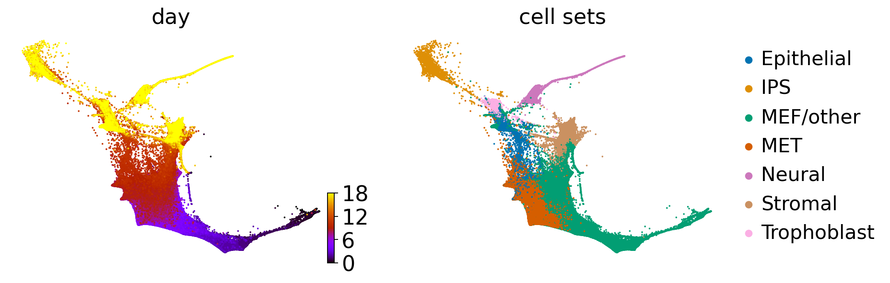
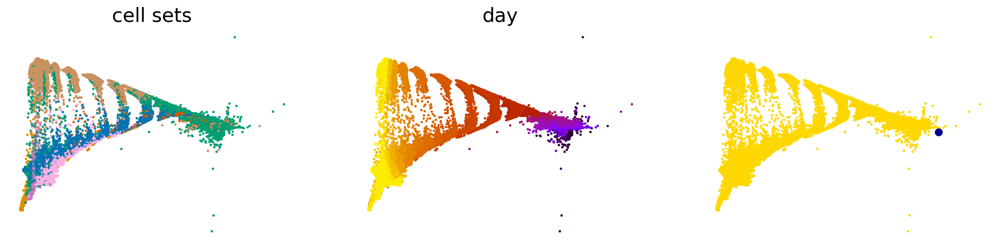
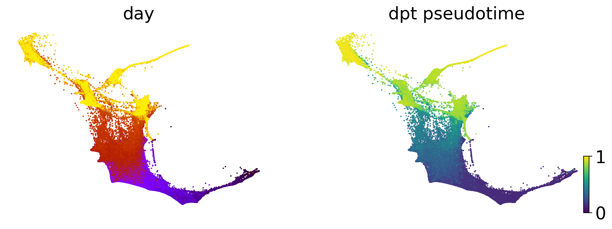
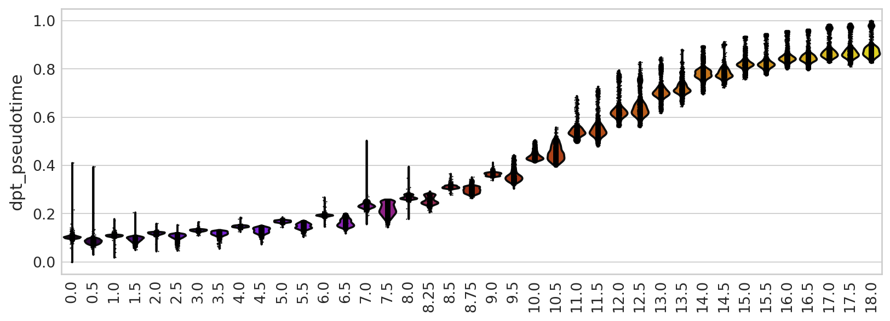
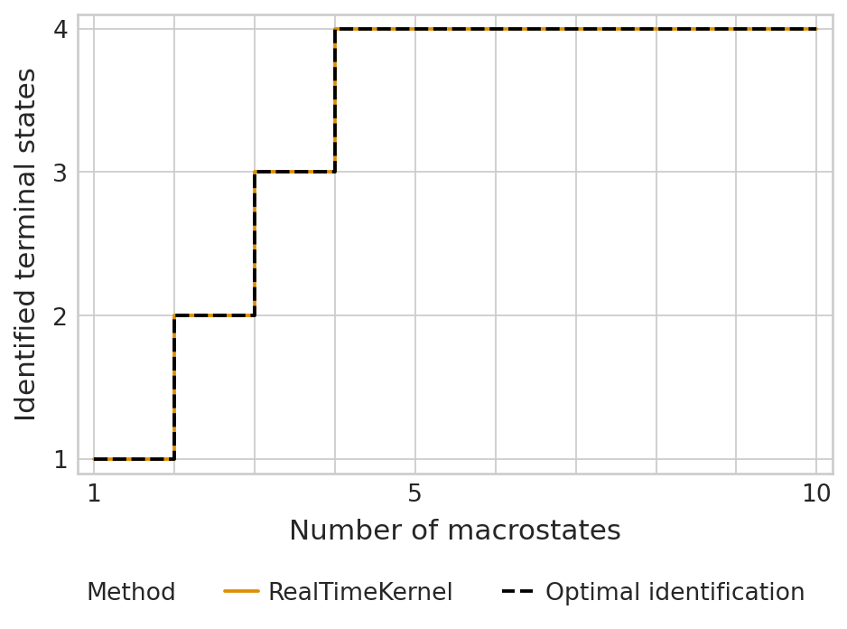
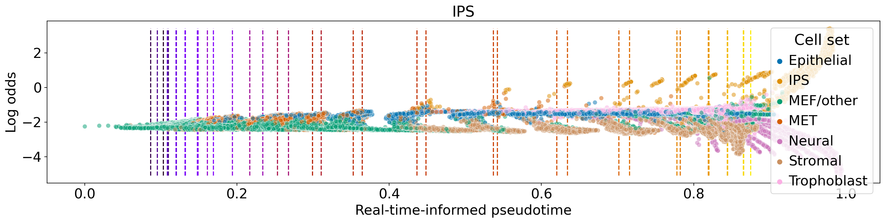
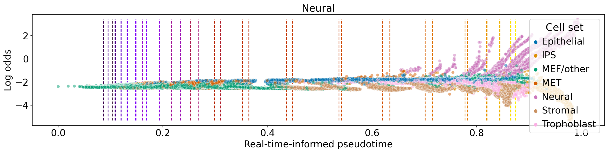
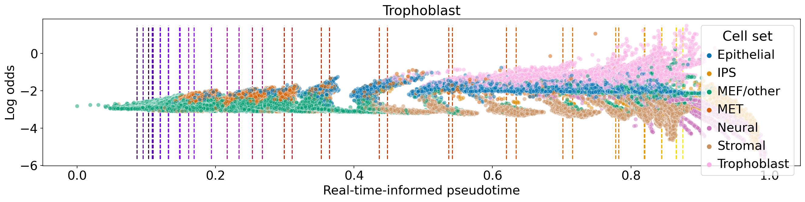
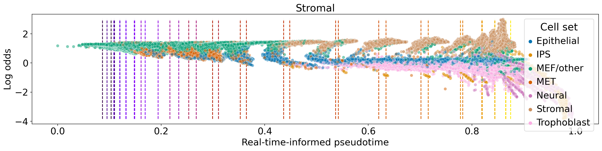

Real-time informed pseudotime on mouse embryonic fibroblasts#
Library imports#
import sys
import numpy as np
import pandas as pd
from scipy.sparse import load_npz
from scipy.stats import spearmanr
import matplotlib.pyplot as plt
import mplscience
import seaborn as sns
from mpl_toolkits.axisartist.axislines import AxesZero
import cellrank as cr
import scanpy as sc
import scvelo as scv
from anndata import AnnData
from scanpy.tools._dpt import DPT
sys.path.extend(["../../../", "."])
from paths import DATA_DIR, FIG_DIR # isort: skip # noqa: E402
Global seed set to 0
General settings#
# set verbosity levels
sc.settings.verbosity = 2
cr.settings.verbosity = 4
scv.settings.verbosity = 3
scv.settings.set_figure_params("scvelo", dpi_save=400, dpi=80, transparent=True, fontsize=20, color_map="viridis")
scv.settings.plot_prefix = ""
SAVE_FIGURES = False
if SAVE_FIGURES:
(FIG_DIR / "realtime_kernel" / "mef").mkdir(parents=True, exist_ok=True)
FIGURE_FORMAT = "pdf"
(DATA_DIR / "mef" / "results").mkdir(parents=True, exist_ok=True)
Function definitions#
def get_symmetric_transition_matrix(transition_matrix):
"""Symmetrize transition matrix."""
sym_mat = (transition_matrix + transition_matrix.T) / 2
# normalise transition matrix
row_sums = sym_mat.sum(axis=1).A1
sym_mat.data = sym_mat.data / row_sums[sym_mat.nonzero()[0]]
return sym_mat
Data loading#
adata = cr.datasets.reprogramming_schiebinger(DATA_DIR / "mef" / "reprogramming_schiebinger.h5ad")
adata = adata[adata.obs["serum"] == "True"].copy()
adata.obs["day"] = adata.obs["day"].astype(float)
adata.uns["cell_sets_colors"] = sns.color_palette("colorblind").as_hex()[: len(adata.obs["cell_sets"].cat.categories)]
adata
DEBUG: Loading dataset from `'/vol/storage/philipp/code/cellrank2_reproducibility/data/mef/reprogramming_schiebinger.h5ad'`
AnnData object with n_obs × n_vars = 165892 × 19089
obs: 'day', 'MEF.identity', 'Pluripotency', 'Cell.cycle', 'ER.stress', 'Epithelial.identity', 'ECM.rearrangement', 'Apoptosis', 'SASP', 'Neural.identity', 'Placental.identity', 'X.reactivation', 'XEN', 'Trophoblast', 'Trophoblast progenitors', 'Spiral Artery Trophpblast Giant Cells', 'Spongiotrophoblasts', 'Oligodendrocyte precursor cells (OPC)', 'Astrocytes', 'Cortical Neurons', 'RadialGlia-Id3', 'RadialGlia-Gdf10', 'RadialGlia-Neurog2', 'Long-term MEFs', 'Embryonic mesenchyme', 'Cxcl12 co-expressed', 'Ifitm1 co-expressed', 'Matn4 co-expressed', '2-cell', '4-cell', '8-cell', '16-cell', '32-cell', 'cell_growth_rate', 'serum', '2i', 'major_cell_sets', 'cell_sets', 'batch'
var: 'highly_variable', 'TF'
uns: 'batch_colors', 'cell_sets_colors', 'day_colors', 'major_cell_sets_colors'
obsm: 'X_force_directed'
scv.pl.scatter(adata, basis="force_directed", c=["day", "cell_sets"], legend_loc="right", cmap="gnuplot")

Data pre-processing#
sc.pp.pca(adata)
computing PCA
on highly variable genes
with n_comps=50
finished (0:00:18)
sc.pp.neighbors(adata, random_state=0)
computing neighbors
using 'X_pca' with n_pcs = 50
finished (0:02:51)
Pseudotime construction#
adata.obs["day"] = adata.obs["day"].astype(float).astype("category")
rtk = cr.kernels.RealTimeKernel.from_wot(adata, path=DATA_DIR / "mef" / "wot_tmaps", time_key="day")
rtk.transition_matrix = load_npz(DATA_DIR / "mef" / "transition_matrices" / "all_connectivities.npz")
WARNING: Your filename has more than two extensions: ['.5_3', '.0', '.h5ad'].
Only considering the two last: ['.0', '.h5ad'].
WARNING: Your filename has more than two extensions: ['.5_3', '.0', '.h5ad'].
Only considering the two last: ['.0', '.h5ad'].
WARNING: Your filename has more than two extensions: ['.5_16', '.0', '.h5ad'].
Only considering the two last: ['.0', '.h5ad'].
WARNING: Your filename has more than two extensions: ['.5_16', '.0', '.h5ad'].
Only considering the two last: ['.0', '.h5ad'].
WARNING: Your filename has more than two extensions: ['.0_13', '.5', '.h5ad'].
Only considering the two last: ['.5', '.h5ad'].
WARNING: Your filename has more than two extensions: ['.0_13', '.5', '.h5ad'].
Only considering the two last: ['.5', '.h5ad'].
WARNING: Your filename has more than two extensions: ['.0_2', '.5', '.h5ad'].
Only considering the two last: ['.5', '.h5ad'].
WARNING: Your filename has more than two extensions: ['.0_2', '.5', '.h5ad'].
Only considering the two last: ['.5', '.h5ad'].
WARNING: Your filename has more than two extensions: ['.0_7', '.5', '.h5ad'].
Only considering the two last: ['.5', '.h5ad'].
WARNING: Your filename has more than two extensions: ['.0_7', '.5', '.h5ad'].
Only considering the two last: ['.5', '.h5ad'].
WARNING: Your filename has more than two extensions: ['.0_12', '.5', '.h5ad'].
Only considering the two last: ['.5', '.h5ad'].
WARNING: Your filename has more than two extensions: ['.0_12', '.5', '.h5ad'].
Only considering the two last: ['.5', '.h5ad'].
WARNING: Your filename has more than two extensions: ['.0_14', '.5', '.h5ad'].
Only considering the two last: ['.5', '.h5ad'].
WARNING: Your filename has more than two extensions: ['.0_14', '.5', '.h5ad'].
Only considering the two last: ['.5', '.h5ad'].
WARNING: Your filename has more than two extensions: ['.0_15', '.5', '.h5ad'].
Only considering the two last: ['.5', '.h5ad'].
WARNING: Your filename has more than two extensions: ['.0_15', '.5', '.h5ad'].
Only considering the two last: ['.5', '.h5ad'].
WARNING: Your filename has more than two extensions: ['.0_10', '.5', '.h5ad'].
Only considering the two last: ['.5', '.h5ad'].
WARNING: Your filename has more than two extensions: ['.0_10', '.5', '.h5ad'].
Only considering the two last: ['.5', '.h5ad'].
WARNING: Your filename has more than two extensions: ['.5_13', '.0', '.h5ad'].
Only considering the two last: ['.0', '.h5ad'].
WARNING: Your filename has more than two extensions: ['.5_13', '.0', '.h5ad'].
Only considering the two last: ['.0', '.h5ad'].
WARNING: Your filename has more than two extensions: ['.0_1', '.5', '.h5ad'].
Only considering the two last: ['.5', '.h5ad'].
WARNING: Your filename has more than two extensions: ['.0_1', '.5', '.h5ad'].
Only considering the two last: ['.5', '.h5ad'].
WARNING: Your filename has more than two extensions: ['.0_0', '.5', '.h5ad'].
Only considering the two last: ['.5', '.h5ad'].
WARNING: Your filename has more than two extensions: ['.0_0', '.5', '.h5ad'].
Only considering the two last: ['.5', '.h5ad'].
WARNING: Your filename has more than two extensions: ['.5_1', '.0', '.h5ad'].
Only considering the two last: ['.0', '.h5ad'].
WARNING: Your filename has more than two extensions: ['.5_1', '.0', '.h5ad'].
Only considering the two last: ['.0', '.h5ad'].
WARNING: Your filename has more than two extensions: ['.0_5', '.5', '.h5ad'].
Only considering the two last: ['.5', '.h5ad'].
WARNING: Your filename has more than two extensions: ['.0_5', '.5', '.h5ad'].
Only considering the two last: ['.5', '.h5ad'].
WARNING: Your filename has more than two extensions: ['.5_4', '.0', '.h5ad'].
Only considering the two last: ['.0', '.h5ad'].
WARNING: Your filename has more than two extensions: ['.5_4', '.0', '.h5ad'].
Only considering the two last: ['.0', '.h5ad'].
WARNING: Your filename has more than two extensions: ['.5_12', '.0', '.h5ad'].
Only considering the two last: ['.0', '.h5ad'].
WARNING: Your filename has more than two extensions: ['.5_12', '.0', '.h5ad'].
Only considering the two last: ['.0', '.h5ad'].
WARNING: Your filename has more than two extensions: ['.5_15', '.0', '.h5ad'].
Only considering the two last: ['.0', '.h5ad'].
WARNING: Your filename has more than two extensions: ['.5_15', '.0', '.h5ad'].
Only considering the two last: ['.0', '.h5ad'].
WARNING: Your filename has more than two extensions: ['.5_17', '.0', '.h5ad'].
Only considering the two last: ['.0', '.h5ad'].
WARNING: Your filename has more than two extensions: ['.5_17', '.0', '.h5ad'].
Only considering the two last: ['.0', '.h5ad'].
WARNING: Your filename has more than two extensions: ['.5_14', '.0', '.h5ad'].
Only considering the two last: ['.0', '.h5ad'].
WARNING: Your filename has more than two extensions: ['.5_14', '.0', '.h5ad'].
Only considering the two last: ['.0', '.h5ad'].
WARNING: Your filename has more than two extensions: ['.5_18', '.0', '.h5ad'].
Only considering the two last: ['.0', '.h5ad'].
WARNING: Your filename has more than two extensions: ['.5_18', '.0', '.h5ad'].
Only considering the two last: ['.0', '.h5ad'].
WARNING: Your filename has more than two extensions: ['.5_10', '.0', '.h5ad'].
Only considering the two last: ['.0', '.h5ad'].
WARNING: Your filename has more than two extensions: ['.5_10', '.0', '.h5ad'].
Only considering the two last: ['.0', '.h5ad'].
WARNING: Your filename has more than two extensions: ['.5_8', '.75', '.h5ad'].
Only considering the two last: ['.75', '.h5ad'].
WARNING: Your filename has more than two extensions: ['.5_8', '.75', '.h5ad'].
Only considering the two last: ['.75', '.h5ad'].
WARNING: Your filename has more than two extensions: ['.5_7', '.0', '.h5ad'].
Only considering the two last: ['.0', '.h5ad'].
WARNING: Your filename has more than two extensions: ['.5_7', '.0', '.h5ad'].
Only considering the two last: ['.0', '.h5ad'].
WARNING: Your filename has more than two extensions: ['.0_4', '.5', '.h5ad'].
Only considering the two last: ['.5', '.h5ad'].
WARNING: Your filename has more than two extensions: ['.0_4', '.5', '.h5ad'].
Only considering the two last: ['.5', '.h5ad'].
WARNING: Your filename has more than two extensions: ['.75_9', '.0', '.h5ad'].
Only considering the two last: ['.0', '.h5ad'].
WARNING: Your filename has more than two extensions: ['.75_9', '.0', '.h5ad'].
Only considering the two last: ['.0', '.h5ad'].
WARNING: Your filename has more than two extensions: ['.0_16', '.5', '.h5ad'].
Only considering the two last: ['.5', '.h5ad'].
WARNING: Your filename has more than two extensions: ['.0_16', '.5', '.h5ad'].
Only considering the two last: ['.5', '.h5ad'].
WARNING: Your filename has more than two extensions: ['.5_6', '.0', '.h5ad'].
Only considering the two last: ['.0', '.h5ad'].
WARNING: Your filename has more than two extensions: ['.5_6', '.0', '.h5ad'].
Only considering the two last: ['.0', '.h5ad'].
WARNING: Your filename has more than two extensions: ['.5_8', '.0', '.h5ad'].
Only considering the two last: ['.0', '.h5ad'].
WARNING: Your filename has more than two extensions: ['.5_8', '.0', '.h5ad'].
Only considering the two last: ['.0', '.h5ad'].
WARNING: Your filename has more than two extensions: ['.0_3', '.5', '.h5ad'].
Only considering the two last: ['.5', '.h5ad'].
WARNING: Your filename has more than two extensions: ['.0_3', '.5', '.h5ad'].
Only considering the two last: ['.5', '.h5ad'].
WARNING: Your filename has more than two extensions: ['.5_11', '.0', '.h5ad'].
Only considering the two last: ['.0', '.h5ad'].
WARNING: Your filename has more than two extensions: ['.5_11', '.0', '.h5ad'].
Only considering the two last: ['.0', '.h5ad'].
WARNING: Your filename has more than two extensions: ['.0_9', '.5', '.h5ad'].
Only considering the two last: ['.5', '.h5ad'].
WARNING: Your filename has more than two extensions: ['.0_9', '.5', '.h5ad'].
Only considering the two last: ['.5', '.h5ad'].
WARNING: Your filename has more than two extensions: ['.5_2', '.0', '.h5ad'].
Only considering the two last: ['.0', '.h5ad'].
WARNING: Your filename has more than two extensions: ['.5_2', '.0', '.h5ad'].
Only considering the two last: ['.0', '.h5ad'].
WARNING: Your filename has more than two extensions: ['.0_17', '.5', '.h5ad'].
Only considering the two last: ['.5', '.h5ad'].
WARNING: Your filename has more than two extensions: ['.0_17', '.5', '.h5ad'].
Only considering the two last: ['.5', '.h5ad'].
WARNING: Your filename has more than two extensions: ['.0_6', '.5', '.h5ad'].
Only considering the two last: ['.5', '.h5ad'].
WARNING: Your filename has more than two extensions: ['.0_6', '.5', '.h5ad'].
Only considering the two last: ['.5', '.h5ad'].
WARNING: Your filename has more than two extensions: ['.5_5', '.0', '.h5ad'].
Only considering the two last: ['.0', '.h5ad'].
WARNING: Your filename has more than two extensions: ['.5_5', '.0', '.h5ad'].
Only considering the two last: ['.0', '.h5ad'].
WARNING: Your filename has more than two extensions: ['.25_8', '.5', '.h5ad'].
Only considering the two last: ['.5', '.h5ad'].
WARNING: Your filename has more than two extensions: ['.25_8', '.5', '.h5ad'].
Only considering the two last: ['.5', '.h5ad'].
WARNING: Your filename has more than two extensions: ['.0_11', '.5', '.h5ad'].
Only considering the two last: ['.5', '.h5ad'].
WARNING: Your filename has more than two extensions: ['.0_11', '.5', '.h5ad'].
Only considering the two last: ['.5', '.h5ad'].
WARNING: Your filename has more than two extensions: ['.0_8', '.25', '.h5ad'].
Only considering the two last: ['.25', '.h5ad'].
WARNING: Your filename has more than two extensions: ['.0_8', '.25', '.h5ad'].
Only considering the two last: ['.25', '.h5ad'].
dpt = DPT(adata=adata, neighbors_key="neighbors")
dpt._transitions_sym = get_symmetric_transition_matrix(rtk.transition_matrix)
dpt.compute_eigen(n_comps=15, random_state=0)
adata.obsm["X_diffmap"] = dpt.eigen_basis
adata.uns["diffmap_evals"] = dpt.eigen_values
eigenvalues of transition matrix
[1.0001833 0.99828625 0.9944004 0.990108 0.98900795 0.9872317
0.97979957 0.97734815 0.969743 0.96797746 0.9661498 0.9550961
0.9499476 0.94606787 0.94111 ]
"""
df = pd.DataFrame(
{
'diff_comp': adata.obsm['X_diffmap'][:, 1],
'cell_type': adata.obs['cell_sets'].values,
'day': adata.obs['day'].values,
}
).reset_index().rename({'index': 'obs_id'}, axis=1)
df = df.loc[df['day'] == "0.0", "diff_comp"]
root_idx = df.index[df.argmax()]
"""
root_idx = 1210
scv.pl.scatter(adata, basis="diffmap", color=["cell_sets", "day", root_idx], components=["1, 2"], size=25)

adata.uns["iroot"] = root_idx
sc.tl.dpt(adata)
computing Diffusion Pseudotime using n_dcs=10
finished (0:00:00)
scv.pl.scatter(adata, basis="force_directed", c=["day", "dpt_pseudotime"], legend_loc="none", cmap="viridis")

with mplscience.style_context():
sns.set_style(style="whitegrid")
fig, ax = plt.subplots(figsize=(12, 4))
sc.pl.violin(adata, keys=["dpt_pseudotime"], groupby="day", rotation=90, ax=ax, title="", legend_loc="none")
plt.show()
if SAVE_FIGURES:
ax.hlines([0, 0.25, 0.5, 0.75, 1], xmin=-0.75, xmax=39, linestyles="solid", colors="black", zorder=0)
ax.axis("off")
fig.savefig(
FIG_DIR
/ "realtime_kernel"
/ "mef"
/ f"real_time_informed_pseudotime_vs_time_point_labeled.{FIGURE_FORMAT}",
format=FIGURE_FORMAT,
transparent=True,
bbox_inches="tight",
)

spearmanr(adata.obs["dpt_pseudotime"].values, adata.obs["day"].astype(float).values)
SpearmanrResult(correlation=0.9806606782007906, pvalue=0.0)
Terminal state estimation#
estimator = cr.estimators.GPCCA(rtk)
estimator.compute_schur(n_components=10)
estimator.plot_spectrum(real_only=True)
Computing Schur decomposition
Adding `adata.uns['eigendecomposition_fwd']`
`.schur_vectors`
`.schur_matrix`
`.eigendecomposition`
Finish (0:00:16)
terminal_states = ["Neural", "IPS", "Trophoblast", "Stromal"]
cluster_key = "cell_sets"
if (DATA_DIR / "mef" / "results" / "tsi-rtk.csv").is_file():
tsi_df = pd.read_csv(DATA_DIR / "mef" / "results" / "tsi-rtk.csv")
estimator._tsi = AnnData(tsi_df, uns={"terminal_states": terminal_states, "cluster_key": cluster_key})
tsi_score = estimator.tsi(n_macrostates=10, terminal_states=terminal_states, cluster_key=cluster_key)
else:
tsi_score = estimator.tsi(n_macrostates=10, terminal_states=terminal_states, cluster_key=cluster_key)
estimator._tsi.to_df().to_csv(DATA_DIR / "mef" / "results" / "tsi-rtk.csv", index=False)
print(f"TSI score: {tsi_score:.2f}")
TSI score: 1.00
/vol/storage/miniconda3/envs/cr2-py38/lib/python3.8/site-packages/anndata/_core/anndata.py:121: ImplicitModificationWarning: Transforming to str index.
warnings.warn("Transforming to str index.", ImplicitModificationWarning)
palette = {"RealTimeKernel": "#DE8F05", "Optimal identification": "#000000"}
if SAVE_FIGURES:
fpath = FIG_DIR / "realtime_kernel" / "mef" / f"tsi-rtk.{FIGURE_FORMAT}"
else:
fpath = None
with mplscience.style_context():
sns.set_style(style="whitegrid")
estimator.plot_tsi(palette=palette, save=fpath)
plt.show()

estimator.compute_macrostates(n_states=4, cluster_key="cell_sets")
estimator.plot_macrostates(which="all", basis="force_directed", legend_loc="right", s=100)
Computing `4` macrostates
DEBUG: Setting the macrostates using macrostates memberships
DEBUG: Raising an exception if there are less than `6` cells.
Adding `.macrostates`
`.macrostates_memberships`
`.coarse_T`
`.coarse_initial_distribution
`.coarse_stationary_distribution`
`.schur_vectors`
`.schur_matrix`
`.eigendecomposition`
Finish (0:00:21)
estimator.set_terminal_states(states=["IPS", "Neural", "Trophoblast", "Stromal"])
DEBUG: Raising an exception if there are less than `6` cells.
Adding `adata.obs['term_states_fwd']`
`adata.obs['term_states_fwd_probs']`
`.terminal_states`
`.terminal_states_probabilities`
`.terminal_states_memberships
Finish`
GPCCA[kernel=RealTimeKernel[n=165892], initial_states=None, terminal_states=['IPS', 'Neural', 'Stromal', 'Trophoblast']]
estimator.compute_fate_probabilities()
estimator.plot_fate_probabilities(basis="force_directed", same_plot=False)
Computing fate probabilities
DEBUG: Solving the linear system using `PETSc` solver `'gmres'` on `1` core(s) with no preconditioner and `tol=1e-06`
Adding `adata.obsm['lineages_fwd']`
`.fate_probabilities`
Finish (0:00:10)
[0]PETSC ERROR: ------------------------------------------------------------------------
[0]PETSC ERROR: Caught signal number 13 Broken Pipe: Likely while reading or writing to a socket
[0]PETSC ERROR: Try option -start_in_debugger or -on_error_attach_debugger
[0]PETSC ERROR: or see https://petsc.org/release/faq/#valgrind and https://petsc.org/release/faq/
[0]PETSC ERROR: configure using --with-debugging=yes, recompile, link, and run
[0]PETSC ERROR: to get more information on the crash.
Abort(59) on node 0 (rank 0 in comm 0): application called MPI_Abort(MPI_COMM_WORLD, 59) - process 0
palette = dict(zip(adata.obs["cell_sets"].cat.categories, adata.uns["cell_sets_colors"]))
median_pt = adata.obs[["day", "dpt_pseudotime"]].groupby("day").median()["dpt_pseudotime"].values
for terminal_state in estimator.terminal_states.cat.categories:
fate_prob = adata.obsm["lineages_fwd"][terminal_state].X.squeeze()
ref_fate_prob = 1 - fate_prob
log_odds = np.log(np.divide(fate_prob, 1 - fate_prob, where=fate_prob != 1, out=np.zeros_like(fate_prob)) + 1e-12)
df = pd.DataFrame(
{
"Log odds": log_odds,
"Real-time-informed pseudotime": adata.obs["dpt_pseudotime"].values,
"Cell set": adata.obs["cell_sets"],
}
)
df = df.loc[(fate_prob != 0) & (fate_prob != 1), :]
fig, ax = plt.subplots(figsize=(20, 4))
ax.vlines(
median_pt,
ymin=df["Log odds"].min(),
ymax=df["Log odds"].max(),
linestyles="dashed",
colors=adata.uns["day_colors"],
zorder=0,
)
sns.scatterplot(
data=df,
x="Real-time-informed pseudotime",
y="Log odds",
hue="Cell set",
palette=palette,
alpha=0.5,
ax=ax,
)
ax.set_title(terminal_state)
plt.show()
if SAVE_FIGURES:
fig = plt.figure(figsize=(10, 4))
ax = fig.add_subplot(axes_class=AxesZero)
for direction in ["xzero", "yzero"]:
ax.axis[direction].set_axisline_style("-|>")
ax.axis[direction].set_visible(True)
ax.axis[direction].set_zorder(0)
ax.axis["xzero"].set_ticklabel_direction("-")
ax.axis["yzero"].set_ticklabel_direction("+")
for direction in ["left", "right", "bottom", "top"]:
ax.axis[direction].set_visible(False)
ax.vlines(
median_pt,
ymin=df["Log odds"].min(),
ymax=df["Log odds"].max(),
linestyles="dashed",
colors=adata.uns["day_colors"],
zorder=0,
)
sns.scatterplot(
data=df,
x="Real-time-informed pseudotime",
y="Log odds",
hue="Cell set",
palette=palette,
alpha=0.5,
ax=ax,
)
ax.get_legend().remove()
ax.set_xticks(ticks=[0, 0.1, 0.2, 0.3, 0.4, 0.5, 0.6, 0.7, 0.8, 0.9, 1], labels=[])
ax.set_yticks(ticks=[-4, -2, 0, 2], labels=[])
ax.set(xlabel=None, ylabel=None)
fig.savefig(
FIG_DIR
/ "realtime_kernel"
/ "mef"
/ f"rtk_log_odds_vs_pt-{terminal_state.lower()}_lineage.{FIGURE_FORMAT}",
format=FIGURE_FORMAT,
transparent=True,
bbox_inches="tight",
pad_inches=0.2,
)
plt.show()



